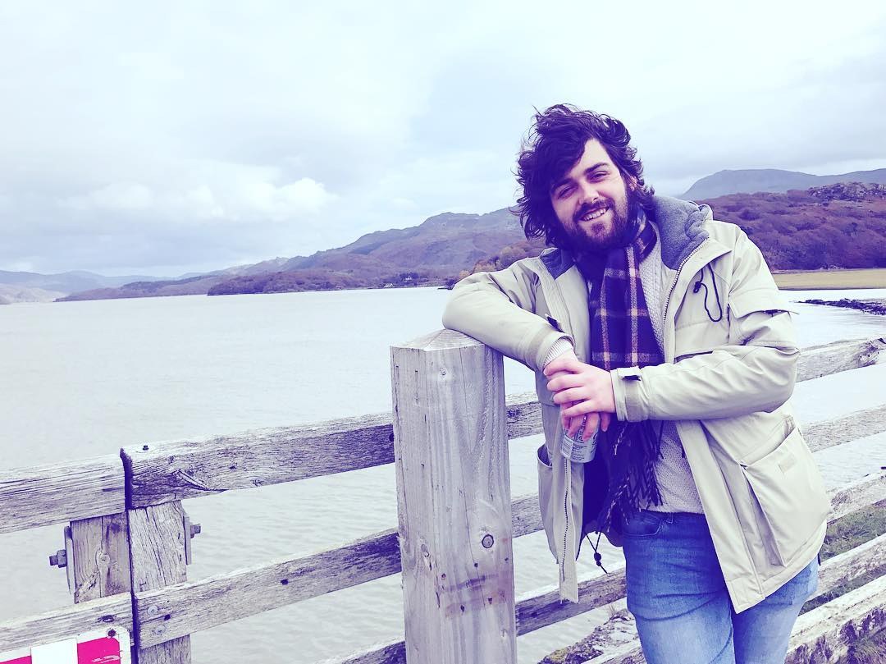

Other Stuff
Music has always been a massive part of my life. I have been playing, along with a few other instruments, for around fifteen years now and have been in multiple bands since my school days. Fortunately, I am now creating and recording music with my partner and our friends under the name 'Visions of Albion'. Yes, the name's long; yes, it's pretentious; yes, we robbed it from William Blake so that we could say something pretentious about it on the radio - that's the way we like it. Early 2021 saw us release our debut EP. A local record label, claiming to be the most eclectic in Liverpool [citation needed] signed us up. We had a limited special-edition release which sold out in the first 24 hours. The label, Klee Records, said it was the fastest they'd ever sold out - so that was nice! Anyways, not being the sentimental kind, we chose not to rest on our laurels - got back in the studio and are now working on our next release. You can find all you need about us through our LINKTREE - give us a listen, you may be pleasantly surprised! Oh, did I mention we also made a Music Video?
Leaving music aside for the moment, another big love of mine is gaming and tech. The first console I ever had was the Sega Megadrive (Genesis, for the benefit of those across the pond.) I didn't realise it at the time but this set in motion a lifelong interest and enthusiasm for games and the wider tech world. Since then, I have amassed a sizeable collection of vintage consoles and other tech such as recording devices, cameras, and anything else I can fit in my abode! On your left, is the apple of my eye - my ZX Spectrum. It's not in great condition, at present, and needs to have its membrane replaced - hopefully I can get it, along with everything else, properly restored once I have the space!

Whenever I'm not pulling my hair out due to a piece of code or nearly losing an eye to a broken string, I like to venture out into the great outdoors. The beauty of living in Liverpool is we have so much fantastic nature in close proximity, namely north Wales. Whenever I can, I like to hitch the train - tent in hand - and take a bit of repsite amongst the hills of Clywd, the vistas of Snowdonia, or wherever else I'm able to. I won't lie: I haven't got a head for heights. It's a two-pronged scenario - that's why you're more likely to find me prowling the Lake District than you are John Lennon Airport and also why, if you see me up a mountain, you may be treated to the excellent amatuer-dramatics of me losing my head when I realise how high up I am. In any event, that doesn't stop me - the scenery, the fresh air; the solace and the sense of achievement combine for the most therapeutic of experiences... Plus, who doesn't love a country pub?